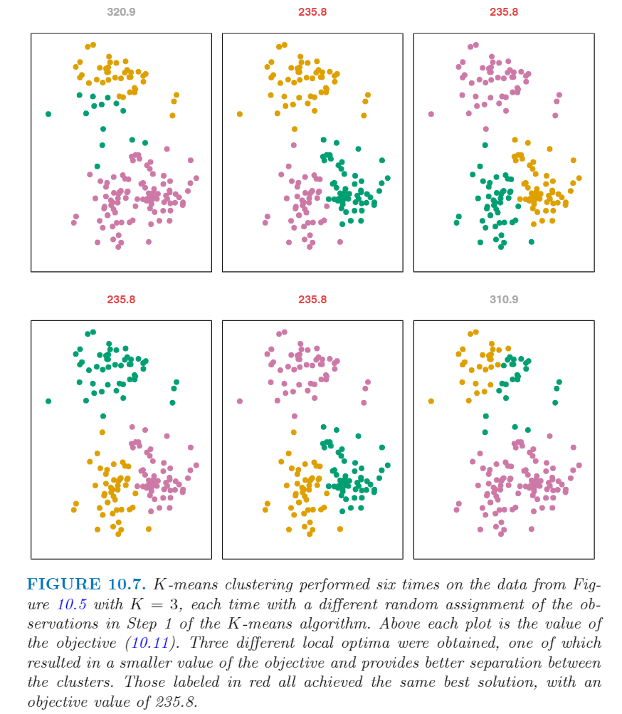
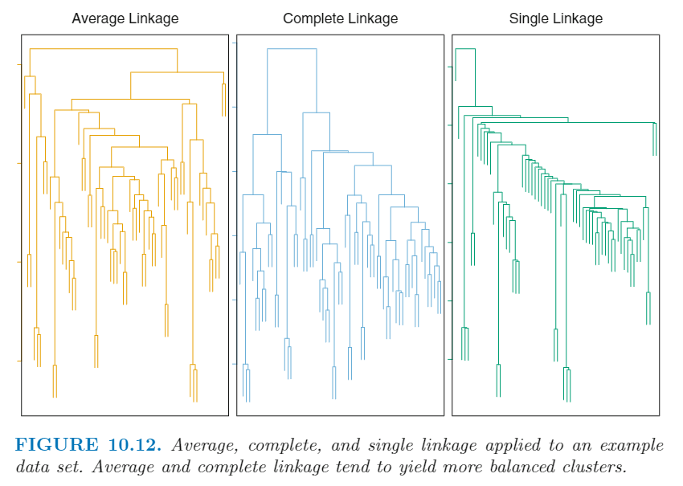

<!DOCTYPE html>


<html lang="zh-CN">


<head>
  <meta charset="utf-8" />
    
  <meta name="viewport" content="width=device-width, initial-scale=1, maximum-scale=1" />
  <title>
    Unsupervised Learning |  VincereZhou&#39;s blog
  </title>
  <meta name="generator" content="hexo-theme-ayer">
  
  <link rel="shortcut icon" href="/images/mojie.jpg" />
  
  
<link rel="stylesheet" href="/dist/main.css">

  <link rel="stylesheet" href="https://cdn.jsdelivr.net/gh/Shen-Yu/cdn/css/remixicon.min.css">
  
<link rel="stylesheet" href="/css/custom.css">

  
  <script src="https://cdn.jsdelivr.net/npm/pace-js@1.0.2/pace.min.js"></script>
  
  

  

<link rel="alternate" href="/atom.xml" title="VincereZhou's blog" type="application/atom+xml">
</head>

</html>

<body>
  <div id="app">
    
      
    <main class="content on">
      <section class="outer">
  <article
  id="post-Unsupervised-Learning"
  class="article article-type-post"
  itemscope
  itemprop="blogPost"
  data-scroll-reveal
>
  <div class="article-inner">
    
    <header class="article-header">
       
<h1 class="article-title sea-center" style="border-left:0" itemprop="name">
  Unsupervised Learning
</h1>
 

    </header>
     
    <div class="article-meta">
      <a href="/posts/da92ff49/" class="article-date">
  <time datetime="2021-06-25T10:50:58.000Z" itemprop="datePublished">2021-06-25</time>
</a> 
  <div class="article-category">
    <a class="article-category-link" href="/categories/%E7%90%86%E8%AE%BA%E5%AD%A6%E4%B9%A0/">理论学习</a> / <a class="article-category-link" href="/categories/%E7%90%86%E8%AE%BA%E5%AD%A6%E4%B9%A0/%E7%BA%BF%E6%80%A7%E6%A8%A1%E5%9E%8B/">线性模型</a>
  </div>
  
<div class="word_count">
    <span class="post-time">
        <span class="post-meta-item-icon">
            <i class="ri-quill-pen-line"></i>
            <span class="post-meta-item-text"> 字数统计:</span>
            <span class="post-count">6.1k</span>
        </span>
    </span>

    <span class="post-time">
        &nbsp; | &nbsp;
        <span class="post-meta-item-icon">
            <i class="ri-book-open-line"></i>
            <span class="post-meta-item-text"> 阅读时长≈</span>
            <span class="post-count">21 分钟</span>
        </span>
    </span>
</div>
 
    </div>
      
    <div class="tocbot"></div>


  
    <div class="article-entry" itemprop="articleBody">
       
  <p>ISL 真是好书！</p>
<span id="more"></span> 
<h1>资料</h1>
<p><a target="_blank" rel="noopener" href="https://www.statlearning.com/">An Introduction to Statistical Learning</a>，下文简称 <strong>ISL</strong></p>
<h1>概述</h1>
<p>无监督学习（<em>unsupervised learning</em> ）指只有特征 X<sub>1</sub>，X<sub>2</sub>, …… ,X<sub>p</sub> ，而没有反应变量的情况。这时候我们就是样本的特征之间的关系，最主要的作用就是对样本进行<strong>分组</strong>。这里主要关注两个无监督学习方法：<strong>主成分分析</strong>（<em>principal components analysis</em>）和 <strong>聚类分析</strong>（<em>clustering</em>）。</p>
<h1>The Challenge of Unsupervised Learning</h1>
<p>无监督学习的挑战在于比较主观，不像监督学习一样有一个真实值在那里，也没有简单的分析目的。无监督学习一般是用在<strong>探索性数据分析</strong>（<em>exploratory data analysis</em>）中。最后，我们也很难评价不同方法结果的优劣，因为无监督学习也不存在普遍承认的类似于交叉验证这样的验证方法。</p>
<p>无监督学习在很多领域都很重要。一个癌症研究者可能会得到100个乳腺癌患者的基因型表达水平数据集，他/她可能会想看一下这些样本能不能划分出子群体，或者这些基因能不能划分出子群体，从而对这个癌症有更好的认知。一个网购平台可能会想将相似的浏览历史和购买历史的顾客划分到一个子群体中，这就是所谓的市场细分，这样方便推送顾客可能会购买的商品广告。一个搜索引擎同样需要将不同的网页进行聚类。上面的这些例子都是通过无监督学习实现的。</p>
<h1>Principle Components Analysis</h1>
<p>当特征很多时，我们无法进行简单地可视化来查看样本之间的关系。如果我们能把原始数据转换成一个二维的数据 (p=2)，并且这两个新的特征能够捕获绝大多数信息，那么就可以根据这两个新的特征画散点图，描述观测值之间的关系。</p>
<p>主成分分析就可以做到这一点，主成分会创建包换尽可能多的变异的新特征，所有的主成分都是旧的p个特征的线性组合。例如，第一主成分表示为下式，第一主成分方差最大。</p>
<p style=""></p><p>可能的参数需要满足下列条件：</p>
<p style=""></p><p>我们将这些参数称为第一主成分的 <em>loading</em> ， 这些 <em>loading</em> 组成了 <em>loading vector</em> 。</p>
<p style=""></p><p>假设我们有一个 n × p 的数据集，我们如何计算第一主成分呢？因为我们需要计算方差，因此<strong>我们这里需要先对 X 进行中心化</strong>（使得X每列均值为0）。然后我们计算线性组合如下</p>
<p style=""></p><p>求解下式，即 Z<sub>i1</sub> 的方差需要最大化，这可以用线性代数中的特征值分解计算得到。这里由于所有特征均值为 0， 因此 Z<sub>i1</sub> 均值也为0。</p>
<p style=""></p><p>这里最终计算得到的 z<sub>11</sub>, …… , z<sub>n1</sub> 称为 <em>scores</em> 。</p>
<p>这里有一个对于第一主成分的几何学解释，第一主成分的 <em>loading vector</em> 其实构成了特征空间中的一个方向，再这个方向上数据 <em>vary the most</em> 。如果我们将这 n 个观测值投影到这个方向上，那么投影的值就是第一主成分的 <em>scores</em> ，即 z<sub>11</sub>, …… , z<sub>n1</sub> 。</p>
<p>下图为 p=2 的两个主成分的例子，其中的绿线便为第一组分的方向。</p>
<p></p>
<p>我们计算得到第一主成分以后，我们就接着找第二主成分。第二主成分同样是p个特征的线性组合，是与第一主成分无关且方差最大的组合。</p>
<p>第二主成分的 scores 格式如下：</p>
<p style=""></p><p>第二主成分与第一主成分无关，等同于要求<strong>二者方向正交</strong>。在上图 6.14 中，由于 p=2，因此与第一主成分正交只有一种可能，因此一旦确定了第一主成分，那么第二主成分也随之确定了。</p>
<p>这里举个例子，数据为美国50个州的犯罪记录，特征包括三种犯罪 (Assault, Murder, Rape) 在 10万人中的逮捕人数，还包括了每个州城市化率 (UrbanPop），因此这里 n=50 ，p=4 。我们在进行PCA分析前，先对数据进行<strong>标准化</strong>（均值为0，标准差为1）。下图为前两个方差组分的结果，这里同时还体现了 <em>loading vectors</em> 的结果（第一主成分和第二主成分的loading 组成的方向），这种图一般称为 <em>biplot</em> 。</p>
<p></p>
<p><em>loading vectors</em> 的值见下表。从这个表里，我们可以看到第一主成分在 UrbanPop 的权重较小，而第二主成分的主要权重则均在 UrbanPop  上。联立这个表和上面的图示，我们可以看出三种犯罪类型的变量彼此紧密关联，但是城市化率和这这三个变量相关较弱，这说明某一种犯罪较为猖狂的城市其他犯罪可能也比较严重。</p>
<p></p>
<p>我们同样可以通过上图检验样本之间的差别。根据我们对 <em>loading vectors</em> 的讨论，我们发现第一主成分值很高的城市，比如  California, Nevada 和 Florida 可能有很高的犯罪率，而像North Dakota 这种第一主成分为负数的州可能犯罪率较低。同时 California 的第二主成分也很高，这说明它的城市化率可能较高。</p>
<h2 id="Another-Interpretation-of-Principal-Components">Another Interpretation of Principal Components</h2>
<p>下图为一个 p=3 的两个主成分的例子，我们看到两个 <em>loading vectors</em> 组成了一个平面，把观测值投射到这个平面上，方差最大。</p>
<p></p>
<p>在前面，我们提到 <em>loading vectors</em>  是特征空间中数据变异最丰富的方向，而 <em>scores</em> 则是数据向 <em>loading vectors</em>  方向上的投射。我们还可以用另外一种方式进行解释：主成分生成了与观测点<strong>距离最近</strong>的低维线性平面。</p>
<p>第一主成分的 <em>loading vector</em> 很特别：它构成的直线是距离这 n 个观测点<strong>最近</strong>的直线。所谓最近指的是欧几里得距离。</p>
<p>我个人感觉<strong>变异最丰富</strong>和<strong>距离最近</strong>是两个性质，变异最丰富并不需要距离最近。例如 p =2 的情况下，变异最丰富其实可以画出无数的平行线，这些平行线都满足变异最丰富。因此上文对于参数的取值有一个限定条件，参数平方和为1，应该是加了这个限制条件才满足了距离最近这个性质。</p>
<p>通过这个解释，我们构建的前M个 <em>score vectors</em> 和 <em>loading vectors</em>  构成了观测值的最佳的 M维的近似值。</p>
<p>这可以写成下式（没看懂）。（假定初始的X是中心化的）</p>
<p style=""></p><p>这说明如果M较大的话，我们可以用PCA结果计算得到X的近似值。PCA分析 M 的最大值为 min(n-1, p) 。</p>
<h2 id="More-on-PCA">More on PCA</h2>
<h3 id="Scaling-the-Variables">Scaling the Variables</h3>
<p>上面提到过，进行PCA分析前，<strong>必须先对X进行中心化</strong>。另外 X 的方差也会对结果造成影响：</p>
<blockquote>
<p><em>the results obtained when we perform PCA will also depend on whether the variables have been individually scaled (each multiplied by a different constant)</em></p>
</blockquote>
<p>如果你对某个特征，乘以某个常数，这就会造成 <em>scale</em> 的变化，最终造成结果变化。不同的方法对于 <em>scale</em> 的影响不一样，比如线性回归压根不受到 <em>scale</em> 的影响（线性回归中如果对某个自变量乘以一个常数 c，那么最后估计的系数会乘以 1/c，最终的模型不会受到实质性影响）。</p>
<p>上面美国不同的州的犯罪率的例子中，我们事先对特征进行了标准化。原始数据4个特征的方差为 18.97, 87.73, 6945.16 和 209.5。因此，如果直接用原始数据 (<em>unscaled data</em>) 进行PCA分析，那么第一主成分会主要偏向于第3个特征，因为第3个特征的方差最高。事实上，第一主成分的所有权重基本都在第3个特征上。</p>
<p>下图为采用标准化的数据 (左) 和未标准化的数据 (右) 的两次PCA分析比对。我们可以看到对于原始数据，第一主成分基本沿着 Assault 的方向（第3个特征），第二主成分基本验证 UrbanPop 的方向。因此，<strong>是否进行方差标准化，会直接影响PCA结果</strong>。</p>
<p></p>
<p><strong>如果不同的特征的单位不同，那么我们一般会在PCA分析前进行数据标准化</strong>。<strong>但是在某些情况下，如果所有特征的单位相同，我们可能不希望将所有的特征的方差调整为1</strong>。</p>
<h3 id="Uniqueness-of-the-Principal-Components">Uniqueness of the Principal Components</h3>
<p>不同软件计算的主成分的 <em>loading vector</em> 的数值都是相同，但是符号可能相反。比如(0.5, 0.5) 和 (-0.5, -0.5) ，数值相同，符号相反，但是其实还是在一条直线上。</p>
<h3 id="The-Proportion-of-Variance-Explained">The Proportion of Variance Explained</h3>
<p>做完PCA分析后，我们可能想知道每个主成分解释的方差比例 ( <em>proportion of variance explained</em>(PVE) )。</p>
<p>数据集中总的方差定义如下：</p>
<p style=""></p><p>然后第 m 个主成分解释的方差为：</p>
<p style=""></p><p>因此第m个主成分的PVE为：</p>
<p style=""></p><p>在上面的美国犯罪数据集中，第一个主成分解释了 62% 的方差，第二主成分解释了 24.7% 的方差。二者之和解释了 87% 的方差，而最后两个主成分只有 13% 的方差（总的主成分数目为 min(n-1,p) ）。这说明在这个数据中，只用两个主成分就已经很好地体现总体数据的情况。 每个主成分的PVE 和累计PVE 见下图，其中左图又称为 <em>scree plot</em> 。</p>
<p></p>
<h3 id="Deciding-How-Many-Principal-Components-to-Use">Deciding How Many Principal Components to Use</h3>
<p>在实际的PCA分析中，我们一般只会用前几个主成分来进行可视化或解释数据，因此我们需要知道需要的主成分数目的<strong>最小值</strong>，才可以较好地把握整个数据集。或者说，我们到底需要几个主成分？</p>
<p>一般我们可以用上图左图（又称为 <em>scree plot</em> ）来决定，通过肉眼来看需要几个主成分，实际上这是一个比较主观的事情，这也是无监督学习的一个特点。</p>
<h3 id="Other-Uses-for-Principal-Components">Other Uses for Principal Components</h3>
<p>我们可以直接用主成分分析的 <em>score vectors</em> 作为新的特征，用于回归问题、分类问题和聚类问题。这种做法的优点是<strong>降低计算量</strong>和<strong>减少噪音的影响</strong>。减少计算量是由于特征数目减少了，而减少噪音的影响是由于<em>signal</em> ( 与 noise 相反) 往往会集中在前几个主成分当中。</p>
<h1>Clustering Methods</h1>
<p>聚类方法就是看能不能把观测值划分成不同的子群体，在同一个子群体内的个体具有相似的特征，而不同的子群体的个体之间则很不相同。这里我们首先要定义<strong>个体之间如何才叫相似或不同</strong>，这需要根据我们对数据集的认知进行特定地考虑。</p>
<p>假设我们有一个 n × p 的数据集，n 个观测值均来自于乳腺癌患者的样本，p 个特征是这些样本的测量值，包括一些临床指标，如肿瘤等级，又或者是基因表达量数据。我们怀疑这n个样本可能存在一定的异质性，比如乳腺癌可能还有一些不为人知的子类型，如何找出这些样本的结构，这就是一个无监督学习的任务。</p>
<p>聚类分析的另一个应用是<strong>市场细分</strong>。</p>
<p>总的来说，我们既可以通过观测值 (Y) 来对观测值进行聚类，也可以通过特征 (X) 进行聚类，二者仅仅是用的数据集不一样，方法相同。下面只考虑基于特征数据集的聚类。</p>
<h2 id="K-Means-Clustering">K-Means Clustering</h2>
<p>K-均值算法是一种将所有观测值划分为 K个不同的<strong>无重叠</strong>的子群体。执行这个算法前，我们需要事先指定子群体的数目K，然后所有的观测值就会被精确划分到某一个子群体中。下图为对 150×2 的数据集聚类的结果</p>
<p></p>
<p>这里我们标记子群体为 C<sub>1</sub>, …… , C<sub>K</sub> 。一个好的分类是<strong>子群体内方差</strong> (<em>within-cluster variation</em>) 尽可能地小。针对C<sub>K</sub>子群体的子群体内方差标记为 W(C<sub>K</sub>)，适用于衡量这个子群体内的观测值之间的区别。</p>
<p>因此，这种算法需要解决的问题标记如下，即总的子群体内方差最小。</p>
<p style=""></p><p>这里我们还需要定义 W(C<sub>K</sub>) ，这个有多种方式，一般定义如下。</p>
<p style=""></p><p>这里 |C<sub>K</sub>| 指第K个子群体的观测值数目。这个公式的含义就是第K个子群体内所有配对的欧几里得距离的平方的均值。</p>
<p>结合上面上面两个式子，我们得到需要解决的问题为：</p>
<p style=""></p><p>因此，我们需要找到一个算法来解决这个问题。这其实是一个很难的问题，因为有很多潜在的聚类方式。如果我们要遍历所有可能的聚类方式，那么总的计算次数就可能是一个天文数字。幸运地是，我们有一个算法来计算得到一个局部最优解。算法描述如下：</p>
<p></p>
<p>这个算法确保每一步迭代总的子群体内方差都会降低。为了理解这一点，我们需要理解下面的式子。</p>
<p style=""></p><p>其中的 X<sub>kj</sub>  bar 是 C<sub>k</sub> 子群体内特征j 的均值，计算公式如下：</p>
<p style=""></p><p>这里ISL 还是没有讲清楚为什么每一步迭代总的子群体内方差都只会降低，最终不再变化，形成一个局部最优解。下图为每一步迭代的图示效果。</p>
<p></p>
<p>因为 K-均值算法得到的是<strong>局部</strong>最优解，而不是全局最优解，<strong>最终的聚类结果受到了算法第一步随机分类结果的影响</strong>。针对这个原因，我们需要用多个初始随机的配置来进行多次聚类，然后我们挑其中最好的结果（总的子群体内方差最低）。</p>
<p>下图为6次使用不同的初始配置的聚类结果，其中总的子群体内方差为 235.8 的聚类结果是我们最终选的结果。</p>
<p></p>
<p>从这个图来看，我感觉聚类也只能是做<strong>探索性分析</strong>，受到的影响因素比较多，没法说两个个体没有聚到一类就一定差异很大。</p>
<h2 id="Hierarchical-Clustering">Hierarchical Clustering</h2>
<p>K-均值算法的一个潜在的缺点在于需要事先指定子群体数目K。层次聚类是一种不需要指定K的算法，它的优点是最终会以一个决策树的形式展示聚类结果，称为 <em>dendrogram</em> 。</p>
<h3 id="Interpreting-a-Dendrogram">Interpreting a Dendrogram</h3>
<p>这里我们用一个 45 × 2 的数据集，见下图。这个数据来自于3个子群体，在图上用不同的颜色进行标记了（也就是说，我们知道真实的聚类结果）。</p>
<p></p>
<p>层次分析结果见下图中的左图。如何去看这个结果呢？从下往上看，决策树的每个叶子表示一个观测值，然后这些叶子会汇聚成一个分支，小分支又能汇聚成更大的分支，以此往复直到决策树的根部。小分支内的个体间的相似性高于大分支。</p>
<p>如何看两个个体的相似性呢？我们需要找到这两个个体第一次合并到成一个分支的节点，查看这个节点在纵坐标的位置，这个值越小说明关系越近。</p>
<p></p>
<p>我们在解读这张图的时候容易出现一些误区。下图为 9 × 2 的数据集的聚类结果，我们可以认为1和6，5和7很相似，这没有问题，因为它们都在最低的水平。但是，你不能仅仅看着9和2很接近，就认为 9 和 2 很相似，这是错误的，事实上， 9和 2 8 5 7 这四个观测值的距离都差不多，如下图右图所示。</p>
<p>这个误区就是你不能根据横向位置来判断观测值之间的远近，而<strong>只能根据纵向位置判断</strong>。横向位置并不可靠，比如这里 1 和 6 可以互换位置，聚类结果其实没变；又或者 2 所在的左支和 8 5 7 所在的右枝互换位置，这个时候你就看着 9 和 2 的横向距离远了，但是聚类结果没变。</p>
<p></p>
<p>通过在某个纵坐标上拉一道口子，画一条线，我们可以划分出任意 K 个 cluster ，比如上图10.9 的中间的图和右图分别划分出2个和3个 <em>clusters</em> 。</p>
<p>层次聚类的名称也来自于这一特性，纵坐标的低点划分的 clusters 一定包含在纵坐标的高点划分的 clusters 内，也就是存在嵌套关系。但是有时实际数据可能并不满足这种假设，例如假设我们有个数据集，里面男女各一半，然后又可以分为美国人、日本人和法国人。我们可以想象，如果我们要聚成2类，我们希望按照性别划分；如果要聚成3类，我们希望按照国籍划分。这种情况下，真实的分类并不是嵌套的，因此K=3的聚类并不包含K=2的结果内。因此这种情况下，层次聚类的结果可能会会比 K-均值聚类的效果更差。</p>
<h3 id="The-Hierarchical-Clustering-Algorithm">The Hierarchical Clustering Algorithm</h3>
<p>层次聚类算法很简单，我们首先要定义很来奶两个观测值之间的 <em>dissimilarity</em> 的指标。一帮我们会用欧几里得距离。算法具体描述如下：</p>
<p></p>
<p>下图为图10.10 聚类的前几步图示。</p>
<p></p>
<p>这个算法看上去很简单，但是还有一个问题没解决。例如上图右下图，我们如果决定 {5，7}  和 8 的不相似性呢？上面我们只提到了两个点之间的不相似性，我们如何两个 <em>cluster</em> 之间的不相似性呢？我们一半称两个 <em>cluster</em> 之间的不相似性称为 <em>linkage</em> 。下表描述了四种常见的 <em>linkage</em> ，一般我们会用 Average 和 complete 。</p>
<p></p>
<p>层次聚类的结果受 <em>linkage</em> 的影响很大，见下图</p>
<p></p>
<h3 id="Choice-of-Dissimilarity-Measure">Choice of Dissimilarity Measure</h3>
<p>一般来说，我们会用欧几里得距离作为 <em>dissimilarity</em> 的衡量指标，但是有时我们可能会想用别的指标。例如，我们可能会用两个观测值特征之间的相关系数作为评价指标，而不是距离。下图展示基于相关系数和欧几里得距离的层次聚类结果，观测值1和3的欧几里得距离很近，但是它们的相关很低；观测值1和2的欧几里得距离很远，但是相关程度很高。</p>
<p></p>
<p><em>dissimilarity</em> 的衡量指标的选择非常重要，我们需要根据数据类型和目的进行确定。例如一个电商想要根据消费者的消费记录进行聚类。我们的目的是找到消费习惯相同的消费者，然后聚成不同的类，特定投放不同的广告。假设数据集的形式是每一行表示一个消费者，每一列表示一种商品，元素只能是0和1，0表示没买过，1表示买过。这里我们应该用什么衡量 <em>dissimilarity</em> 的指标呢？</p>
<p>如果我们用欧几里得距离，那么哪些买过商品的总数很少的顾客会被聚成一堆，这不是我们想要的结果。但是，如果我们用相关系数，那么有着相似的消费习惯的顾客会被聚成一堆（比如都买过A和B, 但是都没买过C和D的顾客），即便有些顾客的总的商品消费数目更高。因此在这种情况下，更适合使用相关系数。</p>
<p>除了 <em>dissimilarity</em> 的衡量指标，我们还需要考虑聚类前要不要进行<em><strong>scale</strong></em>，将所有特征的标准差均调整为1。为了说明这一点，我们还是用电商的例子，有些商品的购买次数可能会比较频繁，比如袜子；有些商品的购买次数会比较少，比如电脑。高频购买的商品可能在计算 <em>dissimilarity</em> 时比低频购买商品有更高的作用，最终在聚类结果中的作用也更大。如果我们事先将所有特征的标准差均调整为1，那么所有特征对于层次聚类的重要性均相同。最终要不要进行 <em>scale</em> 需要具体情况具体分析，在这个电商的例子中我们可能会选择进行 <em>scale</em> 。</p>
<p>下图是是否进行 <em>scale</em> 效果的图示，这一点对 K-均值聚类也有作用。左图为两种商品8个消费者的消费数目，中间的图为 <em>scale</em> 之后的效果，右图的纵坐标为换成消费金额的效果。</p>
<p></p>
<h2 id="Practical-Issues-in-Clustering">Practical Issues in Clustering</h2>
<p>实际聚类时需要关注的问题。</p>
<h3 id="Small-Decisions-with-Big-Consequences">Small Decisions with Big Consequences</h3>
<p>聚类之前，我们需要先做一些决定。</p>
<ul>
<li>数据是否需要进行标准化（均值为0，标准差为1）</li>
<li>如果使用层次聚类
<ul>
<li>使用哪一种 <em>dissimilarity</em> 的衡量指标</li>
<li>使用哪一种 <em>linkage</em></li>
<li>我们最终在决策树上什么地方划一道水平线，来获得具体的 clusters</li>
</ul>
</li>
<li>如果使用 K-均值聚类，K值设定为多少</li>
</ul>
<p>这些决定影响很大，但是都是不存在一个唯一的真实答案的，都需要进行主观判断。我们一般可能会测试几次，然后挑一次结果。</p>
<h3 id="Validating-the-Clusters-Obtained">Validating the Clusters Obtained</h3>
<p>当我们聚类后，我们会想知道我们聚类的结果是不是就是真实的结果，还是仅仅是 <em>clustering the noise</em> 。比如，如果我们有一个独立的新的数据，那么这些数据能不能会被用同样的方式进行聚类？现在有一些新方法可以提供一个 p 值，来评价一个cluster 和我们完全随机分组相比的概率，但是目前还没有达到一个统一的共识。</p>
<h3 id="Other-Considerations-in-Clustering">Other Considerations in Clustering</h3>
<p>K-均值聚类和层次聚类都会将所有的观测值划分到某个子群体中。但是数据中可能会存在离群点，这些点不属于任何一个 cluster ，但是由于这两种聚类方法一定要把所有的观测点都放到某个子群体中，因此<strong>离群点会非常影响聚类结果</strong>。（那我能不能先用PCA分析找到离群点，剔除离群点之后再进行聚类呢？）</p>
<p>聚类方法还有一个缺点是不稳健。比如你用 n 个观测值聚类了一次，然后你随机地剔除了一小撮个体，再聚类一次，你可能会得到一个不一样的结果。</p>
<h3 id="A-Tempered-Approach-to-Interpreting-the-Results-of-Clustering">A Tempered Approach to Interpreting the Results of Clustering</h3>
<p>综合上述，你可能挑选不同的指标来做聚类的测试，最终挑选一个你觉得比较好的聚类结果。最后你可能还需要从原数据集中随机挑选一些子集，查看聚类结果的稳健性。最后的最后，你一定要注意解释聚类结果的方式，<strong>你绝对不能认为聚类结果是绝对的真实情况</strong>，你只能把聚类结果当成之后深入研究的起点（最好是用另一个独立的数据集进行进一步研究）。</p>
 
      <!-- reward -->
      
      <div id="reword-out">
        <div id="reward-btn">
          打赏
        </div>
      </div>
      
    </div>
    

    <!-- copyright -->
    
    <div class="declare">
      <ul class="post-copyright">
        <li>
          <i class="ri-copyright-line"></i>
          <strong>版权声明： </strong>
          
          本博客所有文章除特别声明外，著作权归作者所有。转载请注明出处！
          
        </li>
      </ul>
    </div>
    
    <footer class="article-footer">
       
<div class="share-btn">
      <span class="share-sns share-outer">
        <i class="ri-share-forward-line"></i>
        分享
      </span>
      <div class="share-wrap">
        <i class="arrow"></i>
        <div class="share-icons">
          
          <a class="weibo share-sns" href="javascript:;" data-type="weibo">
            <i class="ri-weibo-fill"></i>
          </a>
          <a class="weixin share-sns wxFab" href="javascript:;" data-type="weixin">
            <i class="ri-wechat-fill"></i>
          </a>
          <a class="qq share-sns" href="javascript:;" data-type="qq">
            <i class="ri-qq-fill"></i>
          </a>
          <a class="douban share-sns" href="javascript:;" data-type="douban">
            <i class="ri-douban-line"></i>
          </a>
          <!-- <a class="qzone share-sns" href="javascript:;" data-type="qzone">
            <i class="icon icon-qzone"></i>
          </a> -->
          
          <a class="facebook share-sns" href="javascript:;" data-type="facebook">
            <i class="ri-facebook-circle-fill"></i>
          </a>
          <a class="twitter share-sns" href="javascript:;" data-type="twitter">
            <i class="ri-twitter-fill"></i>
          </a>
          <a class="google share-sns" href="javascript:;" data-type="google">
            <i class="ri-google-fill"></i>
          </a>
        </div>
      </div>
</div>

<div class="wx-share-modal">
    <a class="modal-close" href="javascript:;"><i class="ri-close-circle-line"></i></a>
    <p>扫一扫，分享到微信</p>
    <div class="wx-qrcode">
      
    </div>
</div>

<div id="share-mask"></div>  
  <ul class="article-tag-list" itemprop="keywords"><li class="article-tag-list-item"><a class="article-tag-list-link" href="/tags/%E6%95%B0%E6%8D%AE%E5%88%86%E6%9E%90/" rel="tag">数据分析</a></li><li class="article-tag-list-item"><a class="article-tag-list-link" href="/tags/%E7%90%86%E8%AE%BA%E5%AD%A6%E4%B9%A0/" rel="tag">理论学习</a></li><li class="article-tag-list-item"><a class="article-tag-list-link" href="/tags/%E7%BA%BF%E6%80%A7%E6%A8%A1%E5%9E%8B/" rel="tag">线性模型</a></li></ul>

    </footer>
  </div>

   
  <nav class="article-nav">
    
      <a href="/posts/c3c06dcb/" class="article-nav-link">
        <strong class="article-nav-caption">上一篇</strong>
        <div class="article-nav-title">
          
            使用自助法估计MAF标准误
          
        </div>
      </a>
    
    
      <a href="/posts/4de29630/" class="article-nav-link">
        <strong class="article-nav-caption">下一篇</strong>
        <div class="article-nav-title">Support Vector Machines</div>
      </a>
    
  </nav>

  
   
<div class="gitalk" id="gitalk-container"></div>

<link rel="stylesheet" href="https://cdn.jsdelivr.net/npm/gitalk@1.6.2/dist/gitalk.css">


<script src="https://cdn.jsdelivr.net/npm/gitalk@1.6.2/dist/gitalk.min.js"></script>


<script src="https://cdn.jsdelivr.net/npm/blueimp-md5@2.10.0/js/md5.min.js"></script>

<script type="text/javascript">
  var gitalk = new Gitalk({
    clientID: '6d2af33404b444be44e5',
    clientSecret: 'f133b587d5da8ae224e4e922f069e3984d8db35c',
    repo: 'gitalk',
    owner: 'VincereZhou',
    admin: ['VincereZhou'],
    // id: location.pathname,      // Ensure uniqueness and length less than 50
    id: md5(location.pathname),
    distractionFreeMode: false,  // Facebook-like distraction free mode
    pagerDirection: 'last'
  })

  gitalk.render('gitalk-container')
</script>

     
</article>

</section>
      <footer class="footer">
  <div class="outer">
    <ul>
      <li>
        Copyrights &copy;
        2019-2021
        <i class="ri-heart-fill heart_icon"></i> Vincere Zhou
      </li>
    </ul>
    <ul>
      <li>
        
        
        <span>
  <span><i class="ri-user-3-fill"></i>访问人数:<span id="busuanzi_value_site_uv"></span></s>
  <span class="division">|</span>
  <span><i class="ri-eye-fill"></i>浏览次数:<span id="busuanzi_value_page_pv"></span></span>
</span>
        
      </li>
    </ul>
    <ul>
      
    </ul>
    <ul>
      
    </ul>
    <ul>
      <li>
        <!-- cnzz统计 -->
        
      </li>
    </ul>

    <!-- 与只只在一起天数 -->
	<ul>
		<li><span id="lovetime_span"></span></li>
	</ul>
    <script type="text/javascript">			
        function show_runtime() {
            window.setTimeout("show_runtime()", 1000);
            X = new Date("03/04/2021 22:11:00");
            Y = new Date();
            T = (Y.getTime() - X.getTime());
            M = 24 * 60 * 60 * 1000;
            a = T / M;
            A = Math.floor(a);
            b = (a - A) * 24;
            B = Math.floor(b);
            c = (b - B) * 60;
            C = Math.floor((b - B) * 60);
            D = Math.floor((c - C) * 60);
            lovetime_span.innerHTML = "只只和男朋友在一起了 " + A + "天" + B + "小时" + C + "分" + D + "秒"
        }
        show_runtime();
    </script>

  </div>
</footer>
      <div class="float_btns">
        <div class="totop" id="totop">
  <i class="ri-arrow-up-line"></i>
</div>

<div class="todark" id="todark">
  <i class="ri-moon-line"></i>
</div>

      </div>
    </main>
    <aside class="sidebar on">
      <button class="navbar-toggle"></button>
<nav class="navbar">
  
  <div class="logo">
    <a href="/"></a>
  </div>
  
  <ul class="nav nav-main">
    
    <li class="nav-item">
      <a class="nav-item-link" href="/">主页</a>
    </li>
    
    <li class="nav-item">
      <a class="nav-item-link" href="/archives">归档</a>
    </li>
    
    <li class="nav-item">
      <a class="nav-item-link" href="/categories">分类</a>
    </li>
    
    <li class="nav-item">
      <a class="nav-item-link" href="/tags">标签</a>
    </li>
    
    <li class="nav-item">
      <a class="nav-item-link" href="/friends">友链</a>
    </li>
    
    <li class="nav-item">
      <a class="nav-item-link" href="/posts/ac7827ff">只只</a>
    </li>
    
    <li class="nav-item">
      <a class="nav-item-link" href="/about">关于</a>
    </li>
    
  </ul>
</nav>
<nav class="navbar navbar-bottom">
  <ul class="nav">
    <li class="nav-item">
      
      <a class="nav-item-link nav-item-search"  title="搜索">
        <i class="ri-search-line"></i>
      </a>
      
      
      <a class="nav-item-link" target="_blank" href="/atom.xml" title="RSS Feed">
        <i class="ri-rss-line"></i>
      </a>
      
    </li>
  </ul>
</nav>
<div class="search-form-wrap">
  <div class="local-search local-search-plugin">
  <input type="search" id="local-search-input" class="local-search-input" placeholder="Search...">
  <div id="local-search-result" class="local-search-result"></div>
</div>
</div>
    </aside>
    <script>
      if (window.matchMedia("(max-width: 768px)").matches) {
        document.querySelector('.content').classList.remove('on');
        document.querySelector('.sidebar').classList.remove('on');
      }
    </script>
    <div id="mask"></div>

<!-- #reward -->
<div id="reward">
  <span class="close"><i class="ri-close-line"></i></span>
  <p class="reward-p"><i class="ri-cup-line"></i>请我喝杯咖啡吧~</p>
  <div class="reward-box">
    
    <div class="reward-item">
      
      <span class="reward-type">支付宝</span>
    </div>
    
    
    <div class="reward-item">
      
      <span class="reward-type">微信</span>
    </div>
    
  </div>
</div>
    
<script src="/js/jquery-2.0.3.min.js"></script>


<script src="/js/lazyload.min.js"></script>

<!-- Tocbot -->


<script src="/js/tocbot.min.js"></script>

<script>
  tocbot.init({
    tocSelector: '.tocbot',
    contentSelector: '.article-entry',
    headingSelector: 'h1, h2, h3, h4, h5, h6',
    hasInnerContainers: true,
    scrollSmooth: true,
    scrollContainer: 'main',
    positionFixedSelector: '.tocbot',
    positionFixedClass: 'is-position-fixed',
    fixedSidebarOffset: 'auto'
  });
</script>

<script src="https://cdn.jsdelivr.net/npm/jquery-modal@0.9.2/jquery.modal.min.js"></script>
<link rel="stylesheet" href="https://cdn.jsdelivr.net/npm/jquery-modal@0.9.2/jquery.modal.min.css">
<script src="https://cdn.jsdelivr.net/npm/justifiedGallery@3.7.0/dist/js/jquery.justifiedGallery.min.js"></script>

<script src="/dist/main.js"></script>

<!-- ImageViewer -->

<!-- Root element of PhotoSwipe. Must have class pswp. -->
<div class="pswp" tabindex="-1" role="dialog" aria-hidden="true">

    <!-- Background of PhotoSwipe. 
         It's a separate element as animating opacity is faster than rgba(). -->
    <div class="pswp__bg"></div>

    <!-- Slides wrapper with overflow:hidden. -->
    <div class="pswp__scroll-wrap">

        <!-- Container that holds slides. 
            PhotoSwipe keeps only 3 of them in the DOM to save memory.
            Don't modify these 3 pswp__item elements, data is added later on. -->
        <div class="pswp__container">
            <div class="pswp__item"></div>
            <div class="pswp__item"></div>
            <div class="pswp__item"></div>
        </div>

        <!-- Default (PhotoSwipeUI_Default) interface on top of sliding area. Can be changed. -->
        <div class="pswp__ui pswp__ui--hidden">

            <div class="pswp__top-bar">

                <!--  Controls are self-explanatory. Order can be changed. -->

                <div class="pswp__counter"></div>

                <button class="pswp__button pswp__button--close" title="Close (Esc)"></button>

                <button class="pswp__button pswp__button--share" style="display:none" title="Share"></button>

                <button class="pswp__button pswp__button--fs" title="Toggle fullscreen"></button>

                <button class="pswp__button pswp__button--zoom" title="Zoom in/out"></button>

                <!-- Preloader demo http://codepen.io/dimsemenov/pen/yyBWoR -->
                <!-- element will get class pswp__preloader--active when preloader is running -->
                <div class="pswp__preloader">
                    <div class="pswp__preloader__icn">
                        <div class="pswp__preloader__cut">
                            <div class="pswp__preloader__donut"></div>
                        </div>
                    </div>
                </div>
            </div>

            <div class="pswp__share-modal pswp__share-modal--hidden pswp__single-tap">
                <div class="pswp__share-tooltip"></div>
            </div>

            <button class="pswp__button pswp__button--arrow--left" title="Previous (arrow left)">
            </button>

            <button class="pswp__button pswp__button--arrow--right" title="Next (arrow right)">
            </button>

            <div class="pswp__caption">
                <div class="pswp__caption__center"></div>
            </div>

        </div>

    </div>

</div>

<link rel="stylesheet" href="https://cdn.jsdelivr.net/npm/photoswipe@4.1.3/dist/photoswipe.min.css">
<link rel="stylesheet" href="https://cdn.jsdelivr.net/npm/photoswipe@4.1.3/dist/default-skin/default-skin.min.css">
<script src="https://cdn.jsdelivr.net/npm/photoswipe@4.1.3/dist/photoswipe.min.js"></script>
<script src="https://cdn.jsdelivr.net/npm/photoswipe@4.1.3/dist/photoswipe-ui-default.min.js"></script>

<script>
    function viewer_init() {
        let pswpElement = document.querySelectorAll('.pswp')[0];
        let $imgArr = document.querySelectorAll(('.article-entry img:not(.reward-img)'))

        $imgArr.forEach(($em, i) => {
            $em.onclick = () => {
                // slider展开状态
                // todo: 这样不好，后面改成状态
                if (document.querySelector('.left-col.show')) return
                let items = []
                $imgArr.forEach(($em2, i2) => {
                    let img = $em2.getAttribute('data-idx', i2)
                    let src = $em2.getAttribute('data-target') || $em2.getAttribute('src')
                    let title = $em2.getAttribute('alt')
                    // 获得原图尺寸
                    const image = new Image()
                    image.src = src
                    items.push({
                        src: src,
                        w: image.width || $em2.width,
                        h: image.height || $em2.height,
                        title: title
                    })
                })
                var gallery = new PhotoSwipe(pswpElement, PhotoSwipeUI_Default, items, {
                    index: parseInt(i)
                });
                gallery.init()
            }
        })
    }
    viewer_init()
</script>

<!-- MathJax -->

<script type="text/x-mathjax-config">
  MathJax.Hub.Config({
      tex2jax: {
          inlineMath: [ ['$','$'], ["\\(","\\)"]  ],
          processEscapes: true,
          skipTags: ['script', 'noscript', 'style', 'textarea', 'pre', 'code']
      }
  });

  MathJax.Hub.Queue(function() {
      var all = MathJax.Hub.getAllJax(), i;
      for(i=0; i < all.length; i += 1) {
          all[i].SourceElement().parentNode.className += ' has-jax';
      }
  });
</script>

<script src="https://cdn.jsdelivr.net/npm/mathjax@2.7.6/unpacked/MathJax.js?config=TeX-AMS-MML_HTMLorMML"></script>
<script>
  var ayerConfig = {
    mathjax: true
  }
</script>

<!-- Katex -->

<!-- busuanzi  -->


<script src="/js/busuanzi-2.3.pure.min.js"></script>


<!-- ClickLove -->

<!-- ClickBoom1 -->

<!-- ClickBoom2 -->

<!-- CodeCopy -->


<link rel="stylesheet" href="/css/clipboard.css">

<script src="https://cdn.jsdelivr.net/npm/clipboard@2/dist/clipboard.min.js"></script>
<script>
  function wait(callback, seconds) {
    var timelag = null;
    timelag = window.setTimeout(callback, seconds);
  }
  !function (e, t, a) {
    var initCopyCode = function(){
      var copyHtml = '';
      copyHtml += '<button class="btn-copy" data-clipboard-snippet="">';
      copyHtml += '<i class="ri-file-copy-2-line"></i><span>COPY</span>';
      copyHtml += '</button>';
      $(".highlight .code pre").before(copyHtml);
      $(".article pre code").before(copyHtml);
      var clipboard = new ClipboardJS('.btn-copy', {
        target: function(trigger) {
          return trigger.nextElementSibling;
        }
      });
      clipboard.on('success', function(e) {
        let $btn = $(e.trigger);
        $btn.addClass('copied');
        let $icon = $($btn.find('i'));
        $icon.removeClass('ri-file-copy-2-line');
        $icon.addClass('ri-checkbox-circle-line');
        let $span = $($btn.find('span'));
        $span[0].innerText = 'COPIED';
        
        wait(function () { // 等待两秒钟后恢复
          $icon.removeClass('ri-checkbox-circle-line');
          $icon.addClass('ri-file-copy-2-line');
          $span[0].innerText = 'COPY';
        }, 2000);
      });
      clipboard.on('error', function(e) {
        e.clearSelection();
        let $btn = $(e.trigger);
        $btn.addClass('copy-failed');
        let $icon = $($btn.find('i'));
        $icon.removeClass('ri-file-copy-2-line');
        $icon.addClass('ri-time-line');
        let $span = $($btn.find('span'));
        $span[0].innerText = 'COPY FAILED';
        
        wait(function () { // 等待两秒钟后恢复
          $icon.removeClass('ri-time-line');
          $icon.addClass('ri-file-copy-2-line');
          $span[0].innerText = 'COPY';
        }, 2000);
      });
    }
    initCopyCode();
  }(window, document);
</script>


<!-- CanvasBackground -->


    
  </div>
<script src="/live2dw/lib/L2Dwidget.min.js?094cbace49a39548bed64abff5988b05"></script><script>L2Dwidget.init({"pluginRootPath":"live2dw/","pluginJsPath":"lib/","pluginModelPath":"assets/","tagMode":false,"debug":false,"model":{"jsonPath":"live2d-widget-model-wanko"},"display":{"position":"left","width":150,"height":300,"hOffset":80,"vOffset":-70},"mobile":{"show":false,"scale":0.5},"log":false});</script></body>

</html>